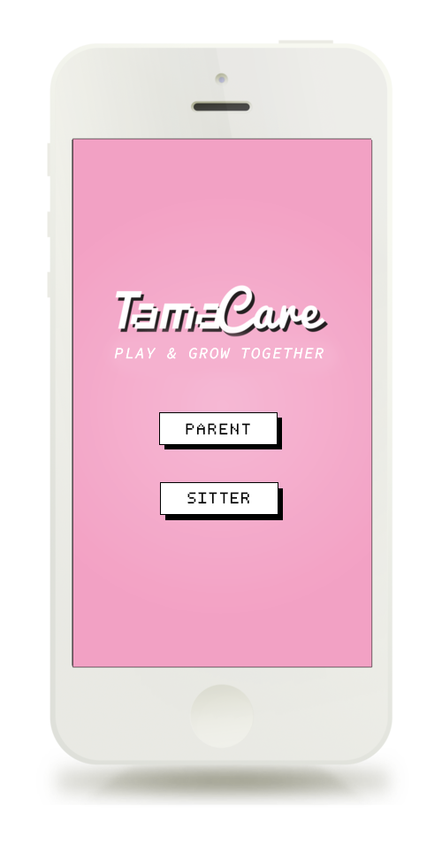
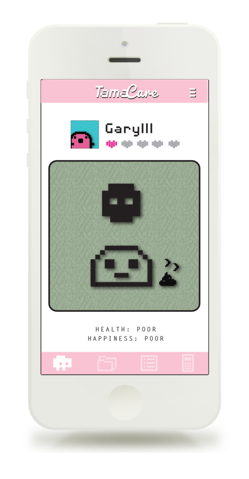
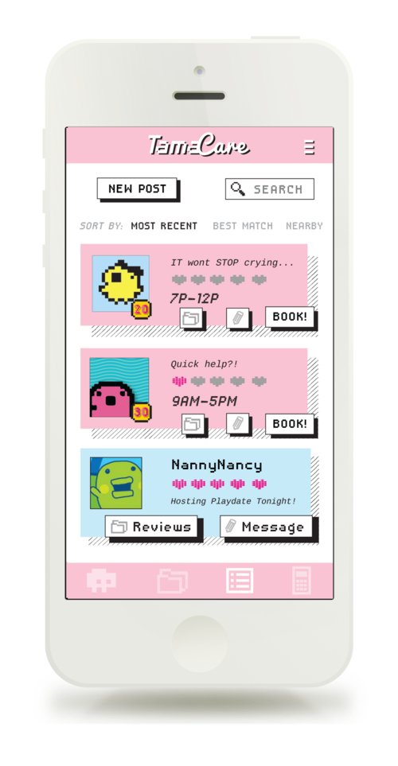
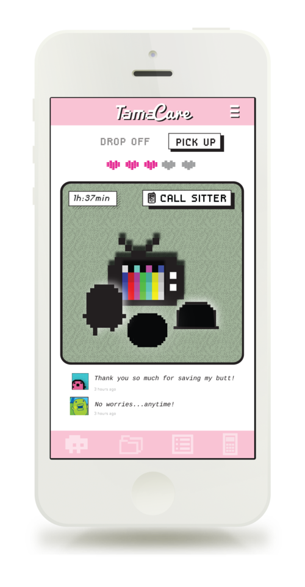
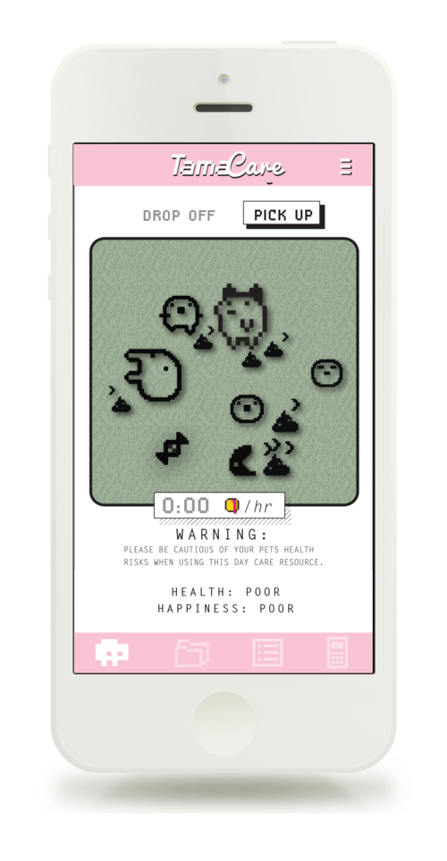

TAMACARE
In 1995, the Tamagotchi digital pet was easy to take care of. Now, with every distraction imaginable at their fingertips, today’s teens often forget to give the attention their digi-pet needs to survive. TamaCare is a resource that allows them to connect and enables responsible parenting through modern technology.




